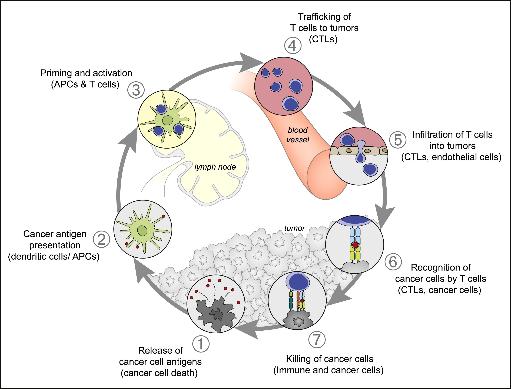

Cancer presents itself as the single leading cause of death in Canada (Government of Canada 2026). Although, conventional treatment methods such as chemotherapy, radiation therapy, and surgery are effective in a lot of cases, there are still some patients for whom these treatments are not feasible or are completely ineffective. Childhood brain tumors in particular can be difficult to treat due to the delicacy of the surrounding developing brain tissue as well as the aggressiveness typically displayed by these tumors(Shah et al. 2025). In such cases the children are often left with no feasible treatment options, highlighting the need for more precise and less invasive treatment alternatives. To address this need, oncologists and immunologists have been researching patient-specific treatments called personalized cancer vaccines that aim to use the immune system to fight cancer. Recent advances in machine learning are making the design of these personalized cancer vaccines increasingly viable, offering new hope for difficult to treat pediatric brain tumors.
Although personalized cancer vaccines are called “Vaccines” they differ from traditional vaccines in a few key ways. First, they are completely unique to a single patient; this is what “personalized” means. For example, if a personalized cancer vaccine was designed and administered to a patient with breast cancer, that vaccine would not be viable for another patient even if the other patient also had breast cancer. Second, we tend to think of traditional vaccines as preventative, but personalized cancer vaccines are mainly curative. This means that personalized cancer vaccines are given to the patient after cancer has developed, in an effort to cure it. Although this is their primary function they have also been shown to provide long term immunity, pointing to their ability to help fight against relapse (Braun et al. 2025).
Along with the potential of providing long term immunity, personalized cancer vaccines present a few other benefits over conventional treatments. One such benefit is the fact that they are highly specific. Traditional methods such as chemotherapy target cancer by killing all rapidly replicating cells in the body. This has the side effect of targeting healthy cells such as hair follicles (resulting in hair loss) and bone marrow (resulting in anemia and fatigue) (Anand et al. 2023). Therefore, this high specificity allows for reduced off-target effects that are common in chemo and radio therapy. This is specifically desirable for pediatric patients as it can help to reduce the harm that these effects can have on the developing body.
Although leveraging the immune system against cancer seems like a difficult task, the body actually naturally uses the immune system to fight cancer. This is a process known as the cancer immunity cycle (Figure 1) and it begins with the cancer cell dying and releasing tumor specific antigens (TSAs), which are just sliced up proteins that are unique to the cancer cell. These released TSAs are then used to train T cells (the killers of the immune system) so that they can recognize and eliminate cells with these antigens (Chen and Mellman 2013). Importantly, these TSAs need to be presented on the surface of the cancer cell so that they are readily accessible by the circulating T cells. There are specific complexes that are used for presenting antigens on the surface of the cancer cell called major histocompatibility (MHC) complexes (Chen and Mellman 2013). You can think of MHC complexes as billboards for what is inside the cell, advertising some of its contents. However, based on their sequence, certain proteins are more likely to attach to these MHC complexes. The struggle lies in identifying which of these proteins are likely to attach to MHC complexes, and therefore be presented on the surface of the cancer cell. This is where machine learning can help to address the challenge of designing cancer vaccines.

One such breakthrough within the last ten years has been the development of the neural network netMHCpan (Jurtz et al. 2017). This neural network is trained on a library of 85,217 proteins and their ability to be presented on the surface of a cancer cell (MHC binding affinity). To measure the performance of the model, the authors used the area under the receiver operating curve (AUC) metric, where a value of AUC=0.5 indicates random performance and a value of AUC=1.0 indicates perfect performance. The netMHCpan model was able to consistently demonstrate an AUC between 0.9 and 1.0, indicating it is excellent at predicting these proteins (Jurtz et al. 2017). The main benefits of using achine learning over traditional lab approaches are speed, scalability, and cost efficiency. Directly following from these benefits is the ability for researchers to justifiably design personalized cancer vaccines for patients who have no other alternatives.
The efficacy of machine learning in this space is demonstrated by a study in which netMHCpan was used to generate therapies for eight patients with brain cancer (glioblastoma in particular) (Keskin et al. 2019). Out of these 8 patients an anti cancer immune response was measured in five. A separate study was similarly able to generate these proteins for glioblastoma patients for which an immune response was observed in 87 out of 90 patients (Latzer et al. 2024). These two studies highlight the utility of machine learning methods in the generation of novel cancer immune therapies.
While the field of personalized cancer vaccines looks promising, there are still several challenges that need to be addressed to make them a viable option. The primary issue is time. While the use of machine learning has greatly sped up the design process of these vaccines, the manufacturing process can still take a while. For cancer patients especially, this is not ideal because cancers will often adapt to develop immune resistance in later stages (Wang et al. 2020). Furthermore, immune activation is a much more complex process than just MHC binding. That being said work is being done to use machine learning and other computational methods to help predict for other key processes of this pathway such as proteasomal processing (Nielsen et al. 2005), and T cell receptor activation (Weber, Pélissier, and Martı́nez 2024). The rapid advancements in machine learning, genetic and protein sequencing, as well as improved accessibility to vast biological data sets mean that these problems are becoming more and more addressable every day.
Conventional cancer treatments such as chemotherapy, radiation therapy, and surgery, while often effective, are limited by toxicity, lack of specificity, and infeasibility in delicate contexts like pediatric brain tumors. Personalized cancer vaccines offer a promising alternative by harnessing the patient’s own immune system to precisely target tumor specific antigens, reducing off-target damage and potentially providing long-term immunity. Crucially, advances in machine learning have made this approach practical by rapidly identifying viable vaccine targets that would be infeasible to discover experimentally. Although challenges such as manufacturing time and immune complexity remain, this new approach to vaccine design represents a powerful and transformative avenue for treating childhood brain tumors and other hard-to-treat cancers.